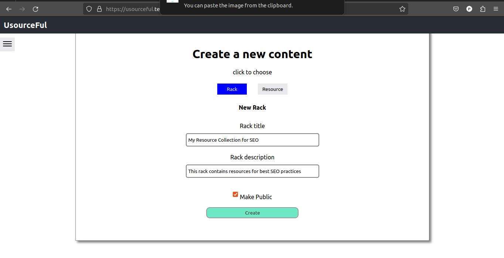
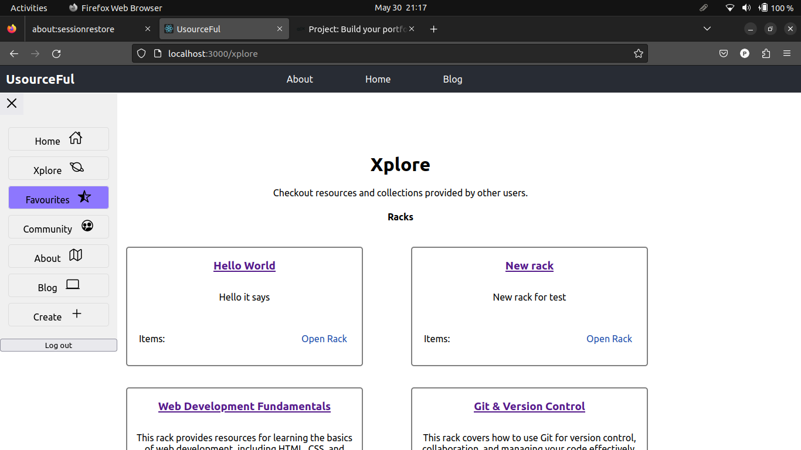
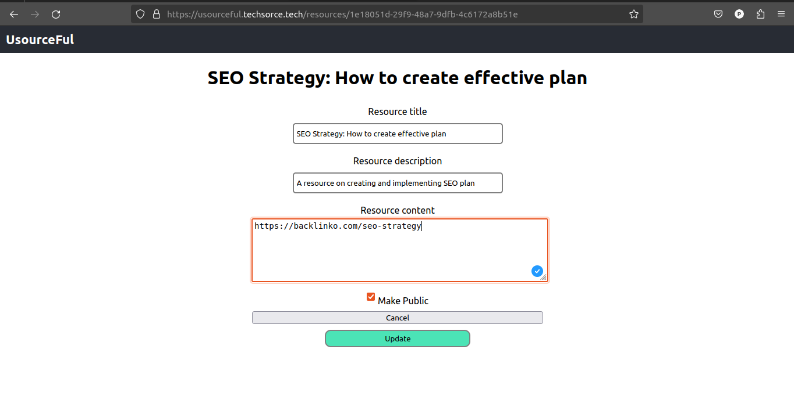

Welcome to UsourceFul
Resources + useful = UsourceFul
Get StartedKey Features
-
Create
Create racks and resources
 -
Xplore
Access resources saved by other users
 -
Edit
Edit the content of your resources

What is UsourceFul?
UsourceFul is web application for storing, managing and sharing resources
What inspired UsourceFul?
As a student who learns on the internet or as a researcher there is a need for a centralized placed or storage to keep website links, Youtube URLS without messing your local space.